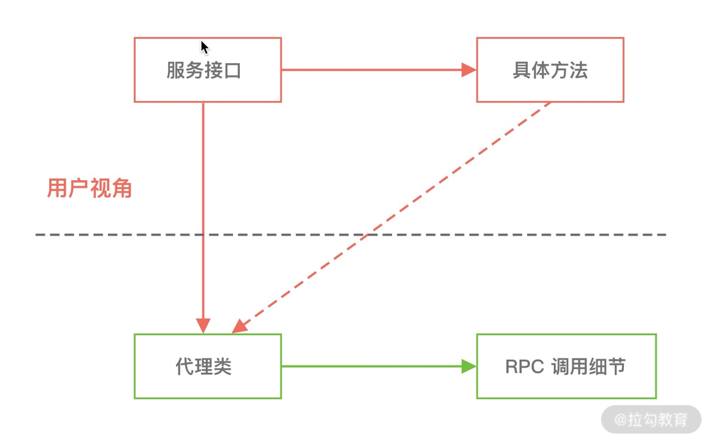

- 00 学好 Netty，是你修炼 Java 内功的必经之路.md.html
- 01 初识 Netty：为什么 Netty 这么流行？.md.html
- 02 纵览全局：把握 Netty 整体架构脉络.md.html
- 03 引导器作用：客户端和服务端启动都要做些什么？.md.html
- 04 事件调度层：为什么 EventLoop 是 Netty 的精髓？.md.html
- 05 服务编排层：Pipeline 如何协调各类 Handler ？.md.html
- 06 粘包拆包问题：如何获取一个完整的网络包？.md.html
- 07 接头暗语：如何利用 Netty 实现自定义协议通信？.md.html
- 08 开箱即用：Netty 支持哪些常用的解码器？.md.html
- 09 数据传输：writeAndFlush 处理流程剖析.md.html
- 10 双刃剑：合理管理 Netty 堆外内存.md.html
- 11 另起炉灶：Netty 数据传输载体 ByteBuf 详解.md.html
- 12 他山之石：高性能内存分配器 jemalloc 基本原理.md.html
- 13 举一反三：Netty 高性能内存管理设计（上）.md.html
- 14 举一反三：Netty 高性能内存管理设计（下）.md.html
- 15 轻量级对象回收站：Recycler 对象池技术解析.md.html
- 16 IO 加速：与众不同的 Netty 零拷贝技术.md.html
- 17 源码篇：从 Linux 出发深入剖析服务端启动流程.md.html
- 18 源码篇：解密 Netty Reactor 线程模型.md.html
- 19 源码篇：一个网络请求在 Netty 中的旅程.md.html
- 20 技巧篇：Netty 的 FastThreadLocal 究竟比 ThreadLocal 快在哪儿？.md.html
- 21 技巧篇：延迟任务处理神器之时间轮 HashedWheelTimer.md.html
- 22 技巧篇：高性能无锁队列 Mpsc Queue.md.html
- 23 架构设计：如何实现一个高性能分布式 RPC 框架.md.html
- 24 服务发布与订阅：搭建生产者和消费者的基础框架.md.html
- 25 远程通信：通信协议设计以及编解码的实现.md.html
- 26 服务治理：服务发现与负载均衡机制的实现.md.html
- 27 动态代理：为用户屏蔽 RPC 调用的底层细节.md.html
- 28 实战总结：RPC 实战总结与进阶延伸.md.html
- 29 编程思想：Netty 中应用了哪些设计模式？.md.html
- 30 实践总结：Netty 在项目开发中的一些最佳实践.md.html
- 31 结束语 技术成长之路：如何打造自己的技术体系.md.html
27 动态代理：为用户屏蔽 RPC 调用的底层细节
动态代理在 RPC 框架的实现中起到了至关重要的作用，它可以帮助用户屏蔽 RPC 调用时底层网络通信、服务发现、负载均衡等具体细节，这些对用户来说并没有什么意义。你在平时项目开发中使用 RPC 框架的时候，只需要调用接口方法，然后就拿到了返回结果，你是否好奇 RPC 框架是如何完成整个调用流程的呢？今天这节课我们就一起来完成 RPC 框架的最后一部分内容：RPC 请求调用和处理，看看如何使用动态代理机制完成这个神奇的操作。
源码参考地址：mini-rpc
动态代理基础
为什么需要代理模式呢？代理模式的优势是可以很好地遵循设计模式中的开放封闭原则，对扩展开发，对修改关闭。你不需要关注目标类的实现细节，通过代理模式可以在不修改目标类的情况下，增强目标类功能的行为。Spring AOP 是 Java 动态代理机制的经典运用，我们在项目开发中经常使用 AOP 技术完成一些切面服务，如耗时监控、事务管理、权限校验等，所有操作都是通过切面扩展实现的，不需要对源代码有所侵入。
动态代理是一种代理模式，它提供了一种能够在运行时动态构建代理类以及动态调用目标方法的机制。为什么称为动态是因为代理类和被代理对象的关系是在运行时决定的，代理类可以看作是对被代理对象的包装，对目标方法的调用是通过代理类来完成的。所以通过代理模式可以有效地将服务提供者和服务消费者进行解耦，隐藏了 RPC 调用的具体细节，如下图所示。

接下来我们一起探讨下动态代理的实现原理，以及常用的 JDK 动态代理、Cglib 动态代理是如何使用的。
JDK 动态代理
JDK 动态代理实现依赖 java.lang.reflect 包中的两个核心类：InvocationHandler 接口和Proxy 类。
- InvocationHandler 接口
JDK 动态代理所代理的对象必须实现一个或者多个接口，生成的代理类也是接口的实现类，然后通过 JDK 动态代理是通过反射调用的方式代理类中的方法，不能代理接口中不存在的方法。每一个动态代理对象必须提供 InvocationHandler 接口的实现类，InvocationHandler 接口中只有一个 invoke() 方法。当我们使用代理对象调用某个方法的时候，最终都会被转发到 invoke() 方法执行具体的逻辑。invoke() 方法的定义如下：
public interface InvocationHandler {
public Object invoke(Object proxy, Method method, Object[] args) throws Throwable;
}
其中 proxy 参数表示需要代理的对象，method 参数表示代理对象被调用的方法，args 参数为被调用方法所需的参数。
- Proxy 类
Proxy 类可以理解为动态创建代理类的工厂类，它提供了一组静态方法和接口用于动态生成对象和代理类。通常我们只需要使用 newProxyInstance() 方法，方法定义如下所示。
public static Object newProxyInstance(ClassLoader loader, Class<?>[] interfaces, InvocationHandler h) {
Objects.requireNonNull(h);
Class<?> caller = System.getSecurityManager() == null ? null : Reflection.getCallerClass();
Constructor<?> cons = getProxyConstructor(caller, loader, interfaces);
return newProxyInstance(caller, cons, h);
}
其中 loader 参数表示需要装载的类加载器 ClassLoader，interfaces 参数表示代理类实现的接口列表，然后你还需要提供一个 InvocationHandler 接口类型的处理器，所有动态代理类的方法调用都会交由该处理器进行处理，这是动态代理的核心所在。
下面我们用一个简单的例子模拟数据库操作的事务管理，从而学习 JDK 动态代理的具体使用方式。首先我们定义数据库表 User 的接口以及实现类：
public interface UserDao {
void insert();
}
public class UserDaoImpl implements UserDao {
@Override
public void insert() {
System.out.println("insert user success.");
}
}
接下来我们实现一个事务管理的工具类，在数据库操作执行前后执行事务操作，代码如下所示：
public class TransactionProxy {
private Object target;
public TransactionProxy(Object target) {
this.target = target;
}
public Object genProxyInstance() {
return Proxy.newProxyInstance(target.getClass().getClassLoader(),
target.getClass().getInterfaces(),
(proxy, method, args) -> {
System.out.println("start transaction");
Object result = method.invoke(target, args);
System.out.println("submit transaction");
return result;
});
}
}
在 genProxyInstance() 方法中我们最主要的是实现 InvocationHandler 接口，在真实对象方法执行方法调用的前后可以扩展自定义行为，以此来增强目标类的功能。为了便于理解，上述例子中我们只简单打印了控制台日志，可以通过测试类看看 JDK 动态代理的实际效果：
public class TransactionProxyTest {
@Test
public void testProxy() {
UserDao userDao = new UserDaoImpl();
UserDao proxyInstance = (UserDao) new TransactionProxy(userDao).genProxyInstance();
proxyInstance.insert();
}
}
程序运行结果如下：
start transaction
insert user success.
submit transaction
Cglib 动态代理
Cglib 动态代理是基于 ASM 字节码生成框架实现的第三方工具类库，相比于 JDK 动态代理，Cglib 动态代理更加灵活，它是通过字节码技术生成的代理类，所以代理类的类型是不受限制的。使用 Cglib 代理的目标类无须实现任何接口，可以做到对目标类零侵入。
Cglib 动态代理是对指定类以字节码的方式生成一个子类，并重写其中的方法，以此来实现动态代理。因为 Cglib 动态代理创建的是目标类的子类，所以目标类必须要有无参构造函数，而且目标类不要用 final 进行修饰。
在我们使用 Cglib 动态代理之前，需要引入相关的 Maven 依赖，如下所示。如果你的项目中已经引入了 spring-core 的依赖，则已经包含了 Cglib 的相关依赖，无须再次引入。
<dependency>
<groupId>cglib</groupId>
<artifactId>cglib</artifactId>
<version>3.3.0</version>
</dependency>
下面我们还是使用上述数据库事务管理的例子，从而学习 JDK 动态代理的具体使用方式。UserDao 接口和实现类保持不变，TransactionProxy 需要重新实现，代码如下所示：
public class CglibTransactionProxy implements MethodInterceptor {
private Object target;
public CglibTransactionProxy(Object target) {
this.target = target;
}
public Object genProxyInstance() {
Enhancer enhancer = new Enhancer();
enhancer.setSuperclass(target.getClass());
enhancer.setCallback(this);
return enhancer.create();
}
@Override
public Object intercept(Object object, Method method, Object[] args, MethodProxy methodProxy) throws Throwable {
System.out.println("start transaction");
Object result = methodProxy.invokeSuper(object, args);
System.out.println("submit transaction");
return result;
}
}
Cglib 动态代理的实现需要依赖两个核心组件：MethodInterceptor 接口和 Enhancer 类，类似于 JDK 动态代理中的InvocationHandler 接口和Proxy 类。
- MethodInterceptor 接口
MethodInterceptor 接口只有 intercept() 一个方法，所有被代理类的方法执行最终都会转移到 intercept() 方法中进行行为增强，真实方法的执行逻辑则通过 Method 或者 MethodProxy 对象进行调用。
- Enhancer 类
Enhancer 类是 Cglib 中的一个字节码增强器，它为我们对代理类进行扩展时提供了极大的便利。Enhancer 类的本质是在运行时动态为代理类生成一个子类，并且拦截代理类中的所有方法。我们可以通过 Enhancer 设置 Callback 接口对代理类方法执行的前后执行一些自定义行为，其中 MethodInterceptor 接口是我们最常用的 Callback 操作。
Cglib 动态代理的测试类与 JDK 动态代理测试类大同小异，程序输出结果也是一样的。测试类代码如下所示：
public class CglibTransactionProxyTest {
public static void main(String[] args) {
UserDao userDao = new UserDaoImpl();
UserDao proxyInstance = (UserDao) new CglibTransactionProxy(userDao).genProxyInstance();
proxyInstance.insert();
}
}
学习完动态代理的基础后，我们接下来实现 RPC 框架中的请求调用和处理就易如反掌啦，首先我们先从服务消费者如何通过动态代理发起 RPC 请求入手。
服务消费者动态代理实现
在《服务发布与订阅：搭建生产者和消费者的基础框架》课程中，我们讲解了 @RpcReference 注解的实现过程。通过一个自定义的 RpcReferenceBean 完成了所有执行方法的拦截，RpcReferenceBean 中 init() 方法是当时留下的 TODO 内容，这里就是代理对象的创建入口，代理对象创建如下所示.
public class RpcReferenceBean implements FactoryBean<Object> {
// 省略其他代码
public void init() throws Exception {
RegistryService registryService = RegistryFactory.getInstance(this.registryAddr, RegistryType.valueOf(this.registryType));
this.object = Proxy.newProxyInstance(
interfaceClass.getClassLoader(),
new Class<?>[]{interfaceClass},
new RpcInvokerProxy(serviceVersion, timeout, registryService));
}
// 省略其他代码
}
RpcInvokerProxy 处理器是实现动态代理逻辑的核心所在，其中包含 RPC 调用时底层网络通信、服务发现、负载均衡等具体细节，我们详细看下如何实现 RpcInvokerProxy 处理器，代码如下所示：
public class RpcInvokerProxy implements InvocationHandler {
private final String serviceVersion;
private final long timeout;
private final RegistryService registryService;
public RpcInvokerProxy(String serviceVersion, long timeout, RegistryService registryService) {
this.serviceVersion = serviceVersion;
this.timeout = timeout;
this.registryService = registryService;
}
@Override
public Object invoke(Object proxy, Method method, Object[] args) throws Throwable {
// 构造 RPC 协议对象
MiniRpcProtocol<MiniRpcRequest> protocol = new MiniRpcProtocol<>();
MsgHeader header = new MsgHeader();
long requestId = MiniRpcRequestHolder.REQUEST_ID_GEN.incrementAndGet();
header.setMagic(ProtocolConstants.MAGIC);
header.setVersion(ProtocolConstants.VERSION);
header.setRequestId(requestId);
header.setSerialization((byte) SerializationTypeEnum.HESSIAN.getType());
header.setMsgType((byte) MsgType.REQUEST.getType());
header.setStatus((byte) 0x1);
protocol.setHeader(header);
MiniRpcRequest request = new MiniRpcRequest();
request.setServiceVersion(this.serviceVersion);
request.setClassName(method.getDeclaringClass().getName());
request.setMethodName(method.getName());
request.setParameterTypes(method.getParameterTypes());
request.setParams(args);
protocol.setBody(request);
RpcConsumer rpcConsumer = new RpcConsumer();
MiniRpcFuture<MiniRpcResponse> future = new MiniRpcFuture<>(new DefaultPromise<>(new DefaultEventLoop()), timeout);
MiniRpcRequestHolder.REQUEST_MAP.put(requestId, future);
// 发起 RPC 远程调用
rpcConsumer.sendRequest(protocol, this.registryService);
// 等待 RPC 调用执行结果
return future.getPromise().get(future.getTimeout(), TimeUnit.MILLISECONDS).getData();
}
}
RpcInvokerProxy 处理器必须要实现 InvocationHandler 接口的 invoke() 方法，被代理的 RPC 接口在执行方法调用时，都会转发到 invoke() 方法上。invoke() 方法的核心流程主要分为三步：构造 RPC 协议对象、发起 RPC 远程调用、等待 RPC 调用执行结果。
RPC 协议对象的构建，只要根据用户配置的接口参数对 MiniRpcProtocol 类的属性依次赋值即可。构建完MiniRpcProtocol 协议对象后，就可以对远端服务节点发起 RPC 调用了，所以 sendRequest() 方法是我们需要重点实现的内容。
public void sendRequest(MiniRpcProtocol<MiniRpcRequest> protocol, RegistryService registryService) throws Exception {
MiniRpcRequest request = protocol.getBody();
Object[] params = request.getParams();
String serviceKey = RpcServiceHelper.buildServiceKey(request.getClassName(), request.getServiceVersion());
int invokerHashCode = params.length > 0 ? params[0].hashCode() : serviceKey.hashCode();
ServiceMeta serviceMetadata = registryService.discovery(serviceKey, invokerHashCode);
if (serviceMetadata != null) {
ChannelFuture future = bootstrap.connect(serviceMetadata.getServiceAddr(), serviceMetadata.getServicePort()).sync();
future.addListener((ChannelFutureListener) arg0 -> {
if (future.isSuccess()) {
log.info("connect rpc server {} on port {} success.", serviceMetadata.getServiceAddr(), serviceMetadata.getServicePort());
} else {
log.error("connect rpc server {} on port {} failed.", serviceMetadata.getServiceAddr(), serviceMetadata.getServicePort());
future.cause().printStackTrace();
eventLoopGroup.shutdownGracefully();
}
});
future.channel().writeAndFlush(protocol);
}
}
发起 RPC 调用之前，我们需要找到最合适的服务节点，直接调用注册中心服务 RegistryService 的 discovery() 方法即可，默认是采用一致性 Hash 算法实现的服务发现。这里有一个小技巧，为了尽可能使所有服务节点收到的请求流量更加均匀，需要为 discovery() 提供一个 invokerHashCode，一般可以采用 RPC 服务接口参数列表中第一个参数的 hashCode 作为参考依据。找到服务节点地址后，接下来通过 Netty 建立 TCP 连接，然后调用 writeAndFlush() 方法将数据发送到远端服务节点。
再次回到 invoke() 方法的主流程，发送 RPC 远程调用后如何等待调用结果返回呢？在《远程通信：通信协议设计以及编解码的实现》课程中，我们介绍了如何使用 Netty 提供的 Promise 工具来实现 RPC 请求的同步等待，Promise 模式本质是一种异步编程模型，我们可以先拿到一个查看任务执行结果的凭证，不必等待任务执行完毕，当我们需要获取任务执行结果时，再使用凭证提供的相关接口进行获取。
当服务提供者收到 RPC 请求后，又应该如何执行真实的方法调用呢？接下来我们继续看下服务提供者如何处理 RPC 请求。
服务提供者反射调用实现
在《远程通信：通信协议设计以及编解码的实现》课程中，我们已经介绍了服务提供者的 Handler 处理器，RPC 请求数据经过 MiniRpcDecoder 解码成 MiniRpcProtocol 对象后，再交由 RpcRequestHandler 执行 RPC 请求调用。一起先来回顾下 RpcRequestHandler 中 channelRead0() 方法的处理逻辑：
@Slf4j
public class RpcRequestHandler extends SimpleChannelInboundHandler<MiniRpcProtocol<MiniRpcRequest>> {
private final Map<String, Object> rpcServiceMap;
public RpcRequestHandler(Map<String, Object> rpcServiceMap) {
this.rpcServiceMap = rpcServiceMap;
}
@Override
protected void channelRead0(ChannelHandlerContext ctx, MiniRpcProtocol<MiniRpcRequest> protocol) {
RpcRequestProcessor.submitRequest(() -> {
MiniRpcProtocol<MiniRpcResponse> resProtocol = new MiniRpcProtocol<>();
MiniRpcResponse response = new MiniRpcResponse();
MsgHeader header = protocol.getHeader();
header.setMsgType((byte) MsgType.RESPONSE.getType());
try {
Object result = handle(protocol.getBody());
response.setData(result);
header.setStatus((byte) MsgStatus.SUCCESS.getCode());
resProtocol.setHeader(header);
resProtocol.setBody(response);
} catch (Throwable throwable) {
header.setStatus((byte) MsgStatus.FAIL.getCode());
response.setMessage(throwable.toString());
log.error("process request {} error", header.getRequestId(), throwable);
}
ctx.writeAndFlush(resProtocol);
});
}
}
因为 RPC 请求调用是比较耗时的，推荐的做法是将 RPC 请求提交到自定义的业务线程池中执行。其中 handle() 方法是真正执行 RPC 调用的地方，是我们这节课需要实现的内容，handle() 方法的实现如下所示：
private Object handle(MiniRpcRequest request) throws Throwable {
String serviceKey = RpcServiceHelper.buildServiceKey(request.getClassName(), request.getServiceVersion());
Object serviceBean = rpcServiceMap.get(serviceKey);
if (serviceBean == null) {
throw new RuntimeException(String.format("service not exist: %s:%s", request.getClassName(), request.getMethodName()));
}
Class<?> serviceClass = serviceBean.getClass();
String methodName = request.getMethodName();
Class<?>[] parameterTypes = request.getParameterTypes();
Object[] parameters = request.getParams();
FastClass fastClass = FastClass.create(serviceClass);
int methodIndex = fastClass.getIndex(methodName, parameterTypes);
return fastClass.invoke(methodIndex, serviceBean, parameters);
}
rpcServiceMap 中存放着服务提供者所有对外发布的服务接口，我们可以通过服务名和服务版本找到对应的服务接口。通过服务接口、方法名、方法参数列表、参数类型列表，我们一般可以使用反射的方式执行方法调用。为了加速服务接口调用的性能，我们采用 Cglib 提供的 FastClass 机制直接调用方法，Cglib 中 MethodProxy 对象就是采用了 FastClass 机制，它可以和 Method 对象完成同样的事情，但是相比于反射性能更高。
FastClass 机制并没有采用反射的方式调用被代理的方法，而是运行时动态生成一个新的 FastClass 子类，向子类中写入直接调用目标方法的逻辑。同时该子类会为代理类分配一个 int 类型的 index 索引，FastClass 即可通过 index 索引定位到需要调用的方法。
至此，整个 RPC 框架的原型我们已经实现完毕。你可以在本地先启动 Zookeeper 服务器，然后启动 rpc-provider、rpc-consumer 两个模块，通过 HTTP 请求发起测试，如下所示：
$ curl http://localhost:8080/hello
hellomini rpc
总结
本节课我们介绍了动态代理的基本原理，并使用动态代理技术完成了 RPC 请求的调用和处理。动态代理技术是 RPC 框架的核心技术之一，也是很重要的一个性能优化点。选择哪种动态代理技术需要根据场景有的放矢，实践出真知，在技术选型时还是要做好性能测试。例如，在 JDK 1.8 版本之后 JDK 动态代理在运行多次之后比 Cglib 的速度更快了，但是它还是有使用的局限性；虽然 Javassist 字节码生成的性能相比 JDK 动态代理和 Cglib 动态代理更好，但是 Javassist 在生成动态代理类上性能较慢的。
留两个课后任务：
- Dubbo 框架默认使用 Javassist 实现动态代理功能，你可以将 JDK 动态代理的方式替换为 Javassist 的实现方式。
- 服务消费者每次发起 RPC 调用时都建立了一次 TCP 连接，你知道怎么优化吗？